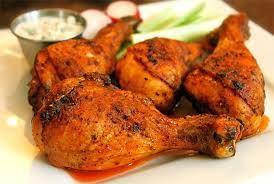

Golden Chicken

Description
This chicken dish combines elements from three of my favorite chicken recipes: chicken curry, chicken tagine, and a Creole-style smothered chicken. The braising liquid is rich and delicious, getting its yellow golden color from turmeric and saffron and its intense flavor from a low-and-slow simmer. Serve over buttery mashed potatoes, rice, or noodles. Ladle the sauce over top, and garnish with sliced green onions and minced jalapeños.
Not all recipes have names. Sometimes you just throw a bunch of stuff together, and eat it without even considering what it would, or should, be called, which is not a problem unless you also film the dish and plan to post it online. It's this exact set of circumstances that led to a little something called "Golden Chicken." Oh yeah, with a name like Golden Chicken, you know it's got to be good. Or at least golden. And this is both.
This started out as a quick and dirty curry. But after everything was simmering in the pan, it started to remind me of a tagine, as well as (thanks to the "Holy Trinity") some sort of creole-ish chicken stew. Combining all those words into a recipe name seemed too hard, so I simply called it what it looked like. So that covers the almost literal meaning, but the name also worked figuratively, at least according to a cook I used to work with in college.
I can't remember his name, but he was the first person I'd ever come across that used the word "golden" as a synonym for "great," "awesome," "lucky," "nice," "fine," "perfect," and about two dozen other similar words. If you asked him how he was, he'd say, "I'm golden." If you asked him how the dinner prep was going, he'd say, "We're golden." And, I'm pretty sure if he made it, and you asked him how this chicken dish was, he's say it was "golden." I couldn't agree more. Which is why I really do hope you give this a try soon. Enjoy!
Ingredients
- 4 (12 ounce) chicken leg quarters
- 2 teaspoons kosher salt, plus more to taste
- 1 tablespoon olive oil
- 1 cup diced onion
- half cup diced celery
- half cup diced jalapeño pepper
- 2 teaspoon ground cumin
- 1 teaspoon smoked paprika
- quarter teaspoon ground coriander
- quarter teaspoon ground tumeric
- half teaspoon freshly ground black pepper
- 1/8 teaspoon cayenne pepper
- 1/8 teaspoon ground cinnamon
- 3 cloves garlic, crushed
- 1 tablespoon tomato paste
- 3 tablespoon white wine vinigar
- 2 and half cups cold water
- 1 teaspoon saffron threads, crushed
- 1 teaspoon dried currants
- 1 teaspoon chicken bouillon base
Steps
- Place chicken leg quarters on a work surface with the skin facing up. Make a cut into the thickest part of each drumstick, all the way down to the bone. Then make two cuts, about 1 inch apart, right in the center of each thigh. Season both sides generously with 2 teaspoons kosher salt.
- Heat oil in a large skillet over high heat. Add chicken, skin-side down, and sear until skin is nicely browned, 5 to 6 minutes. Flip and sear for 2 more minutes. Turn off the heat and remove chicken to a plate, leaving any rendered fat in the skillet.
- Turn the heat back on to medium; add onion, celery, jalapeño, and a pinch of salt to the skillet. Sauté until onion turns translucent and veggies have softened, 5 to 7 minutes. Add cumin, paprika, coriander, turmeric, pepper, cayenne, cinnamon, and garlic; cook and stir until garlic has cooked a bit and spices are toasted, about 2 minutes.
- Stir in tomato paste, vinegar, water, and saffron. Increase heat to high and stir in currants and chicken base; bring to a simmer.
- Add chicken to the skillet, skin-side up, and reduce heat to low. Baste chicken with the liquid. Cover and cook over low or medium-low heat at a gentle simmer for 1 hour.
- Flip chicken, cover, and simmer gently until the meat is fork-tender and almost falling off the bone, about 30 more minutes.
- Flip and baste chicken again. Increase heat to medium and cook, uncovered, until chicken is very tender and the braising liquid has reduced a bit, 20 to 30 minutes more.
- Taste the braising liquid and adjust seasoning if needed before serving.